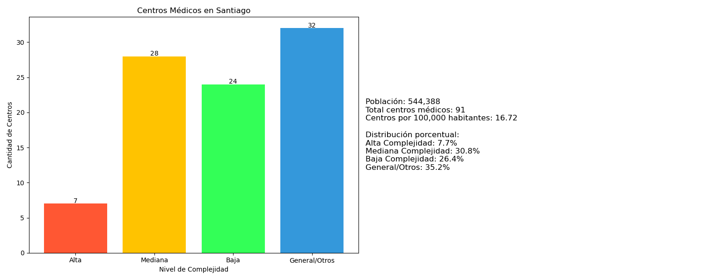
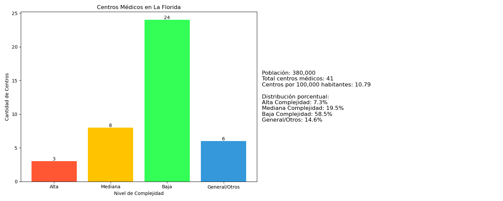
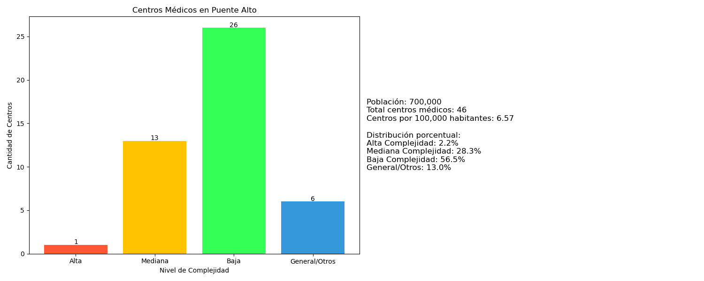

Introducción
La distribución de la infraestructura sanitaria en una ciudad no solo refleja su desarrollo urbano, sino también las desigualdades sociales que atraviesan a sus habitantes. En este proyecto, realizamos un análisis geográfico y social de los establecimientos de salud vigentes en la Región Metropolitana de Chile, utilizando datos abiertos publicados por el Ministerio de Salud. A través de una visualización basada en mapas de calor, buscamos identificar patrones de concentración y carencias en la ubicación de hospitales, consultorios, clínicas y otros centros médicos.
Gráficos por comuna



Actualmente, los gráficos se presentan de manera secuencial. A futuro, se proyecta que esta visualización permita navegar de manera horizontal o mediante una galería dinámica.
Nota sobre los datos poblacionales
Las cifras de población comunal utilizadas fueron obtenidas desde el portal de la Biblioteca del Congreso Nacional de Chile (BCN): ver fuente. Estos datos corresponden a estimaciones para el año 2024.